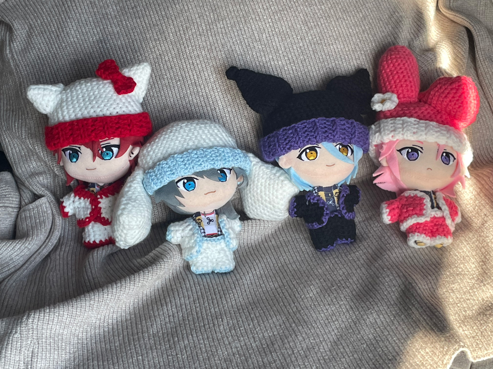
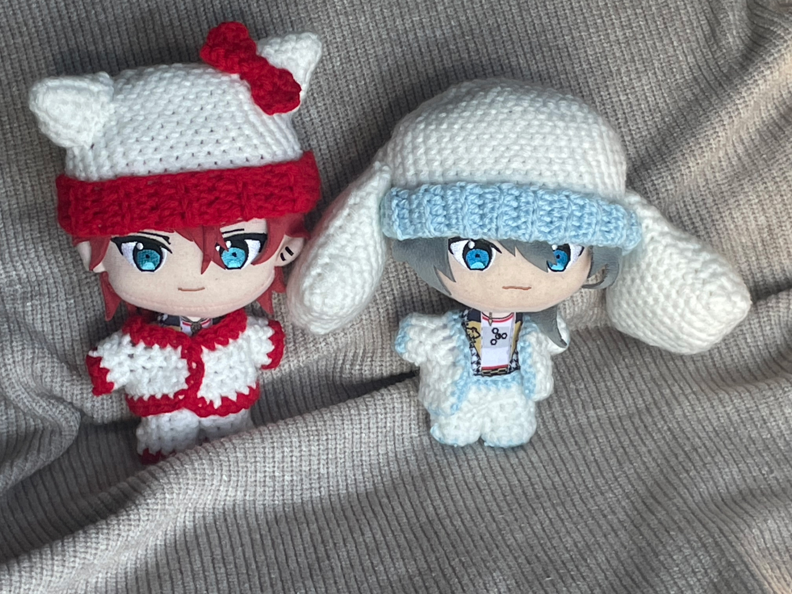
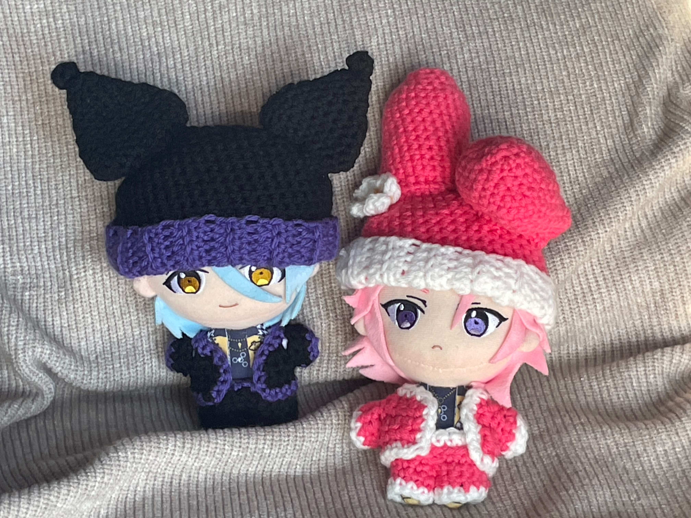
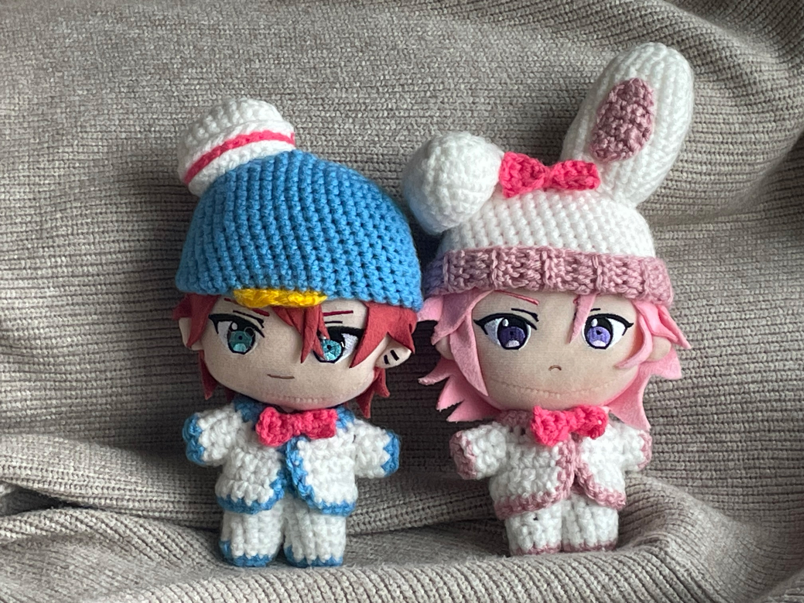

-
Sanrio Nui Clothes Collection
-
Crotcheting / 2023
-
Wool yarn, crotcheting needle
-
Objective
-
To create yarn outfits based on popular Sanrio characters Hello Kitty, Cinnamoroll, My Melody, Kuromi
Tuxedo Sam and Bonbonribbon.
-
About
-
Nuigurumis (Japanese for 'stuffed toy' or 'plush toy') are merchandise pieces produced for media such
as games and animes. They are very popular in Japan and are usually placed in crane machines. When
collected, they can be used as charms, decorations or simply for display. Sometimes collectors go the
extra mile and create accessories and clothes for them.
-
Process
-
The clothes are made up of mostly single stitches while the band around the hat is made up of half-double
crotchets. The patterns are custum made by me. The ears are stuffed with stuffing before being
sewn on with a crotcheting needle. They are gone over with a regular crotcheting pin to reinforce
the structural integrity. All other accessories are sewn on.



